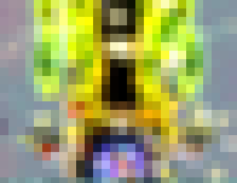
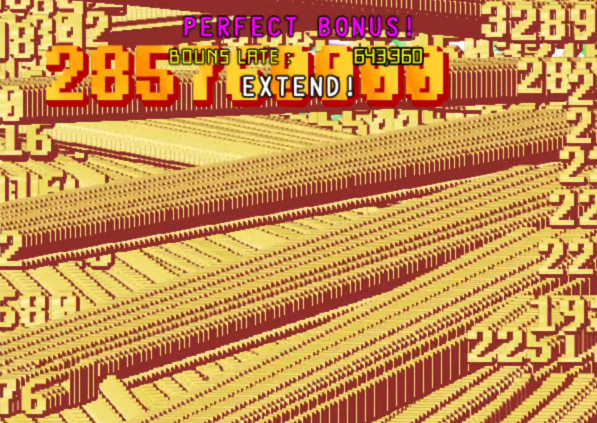
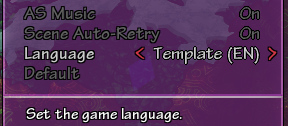

<html>
	<head>
	<link rel="stylesheet"
  	href="https://fonts.googleapis.com/css?family=Lora">
	<link rel="stylesheet"
  	href="https://fonts.googleapis.com/css?family=Architects+Daughter">
	<style>
		body {
			font-family: 'Lora', serif;
			font-size: 20px;
		}
		span.original {
			font-family: 'Architects Daughter', serif;
			font-size: 24px;
			font-weight: bold;
			background-color: #0000b2;
		  	background-image: linear-gradient(180deg, #0000b2, #000);
    			background-size: 100%;
    			-webkit-background-clip: text;
    			-moz-background-clip: text;
    			-webkit-text-fill-color: transparent; 
    			-moz-text-fill-color: transparent;
		}
		span.hakurei {
			font-family: 'Architects Daughter', serif;
			font-size: 24px;
			font-weight: bold;
			background-color: #ff4d4d;
		  	background-image: linear-gradient(180deg, #ff4d4d, #ffffff);
    			background-size: 100%;
    			-webkit-background-clip: text;
    			-moz-background-clip: text;
    			-webkit-text-fill-color: transparent; 
    			-moz-text-fill-color: transparent;
		}
		.lcolumn {
  			float: left;
  			width: 50%;
		}
		.rcolumn {
  			float: left;
  			width: 50%;
		}

		/* Clear floats after the columns */
		.row:after {
  			content: "";
  			display: table;
  			clear: both;
		}
	</style>
	<script>

	document.addEventListener("DOMContentLoaded", function(event) {
  		dateMethod();
	});

function dateMethod() {
  var today = new Date();
  var dd = today.getDate();
  var mm = today.getMonth() + 1; //January is 0!
  var yyyy = today.getFullYear(); 
  var test = true;

 var element = document.getElementById("txt");
 var element2 = document.getElementById("roew");

  //if (test) {
  if ((mm == 10 && dd >= 15 && dd <= 31) || (mm == 11 && dd == 1) && yyyy < 2023){ 
  	element2.remove();
  } else { //Eh, I guess this won't do much in the end, but I want it to feel quality Limited Time:tm:
  	element.remove();
  }
}
	</script>
	</head>
	<body>

	<div id="txt">
		<h1>Return of Eastern Wonderland</h1>
		<div name="introduction">
		<p>Hello everyone.  This is Wish of Analogue Reverie speaking...and boy is this going to be weird to write.</p>
		<p>My personal apologies that there isn't much to show for this year's Hakudenkai.  There's been a lot happening in my life, and I find many of these things difficult to process in tandem with creating games.  I treat my game creation with the same seriousness that I do a job or degree, which effectively means I have 1 full-time problem and 2 part-time occupations...</p>
		<p>That being said - I am more than eager to talk about my project and some of the design philosophy going into it, and some things you can expect from it.</p>
		</div>
		<h2>Just...what the hell is this thing?</h2>
		<div name="history">
		<p>As some of the people who have been following fan works may know, this is a project that has effectively been in development hell for <b>5 years</b>.  Many may be asking why that is, so here's a small primer on the history of the project.</p>
		<p>I myself have been creating danmaku scripts in the community for over half a decade, but a lot of my works were ones I actively chose to use different tools than what you may expect.  Danmakufu is the standard in the West for creating Touhou-like shmup experiences, but I was never truly satisfied with it.  I didn't have the range of control that I wanted.  As a teenager with a wealth of free time and maybe the skill to do it, I got to work and churned out a few scripts using GameMaker:Studio.</p>
		<p>Over time, my skills improved from being awful to being tolerable enough to a point where I wanted to make a name for myself - I wanted to create a full game.  So I got started.  I revamped my existing system in accordance with many of the criticisms of it I received by people who played my existing works and people who specifically wanted to help me test this game.</p>
		<p>I would soon announce the presence of my work on major forums, reaching a wider spectrum of people (ah yes, when they were still visited...) and people got to see the first 1-stage build.  Considering that was in...2017, you can probably expect the level of quality compared to what I can accomplish now.  It had problems, and not all of them were ones I could address.</p>
		<p>For one thing, many assets were placeholders and thus not my own.  I had a lot of ambitious goals, specifically in the range of in-game translation tools and other technical aspects, but I knew I was not going to be competent at art or music enough to accomplish what I wanted to do.</p>
		<p>I had posted a video showing off the demo to YouTube, and as if by fate met my right hand man for this project - yeashie.  He handles a lot within Analogue Reverie these days and helps keep the ship afloat when I can't.  All of a sudden, I had someone who could help me fix my sorry excuse for sprite art.</p>
		<p>At this time I met a few more people related to the project, including VYCM - who at the same time was working on his own on Dream Logical World, unknown to us - and other assorted people who have since come and gone through this project specifically.</p>
		<p>Together we founded <span style="font-family: 'Architects Daughter', serif; font-size: 24px; font-weight: bold;">Analogue Reverie</span>, a circle whose name has origins in what we envision to be the end goal for our games, but particularly for RoEW - a nostalgia-fueled dream.</p>
		<p>It was around this time that I had also started university and had an event that effectively turned my world upside down - when you've reached the peak of chronic depression, a passion project is basically the last thing you're thinking about.</p>
		<p>Most of why this project continues to exist - and to some extent, haunt me - is that I can't let the vision go to waste.  The original inspiration of this project was the fact that many representations of the PC-98 world have proven to me to be...pretty lackluster.  The original has aged plenty, but that doesn't mean bringing it back has to be just as archaic and esoteric as the original.  Reverse engineering and preservation are important, but many of these experiences that I love deserve to be given a second chance at life in a light that shows off just what makes them beautiful.</p>
		<p>And...in fairness, for SoEW, there's not a lot I actively liked about it, and there's many things that plague me about it today.  Even compared to the other entries on the PC-98, it's got the stiffest feeling of them all.  It's got the simplest patterns I've ever seen, with a couple series mainstay characters, one character that <i>wishes</i> she was a series mainstay, and a few assorted characters we basically never hear from again.  How do we extract something meaningful out of that?</p>
		<p>Despite that, this is the game of that era of Touhou that singlehandedly had the most potential for change, and contained a few legitimately really intriguing elements.  The nature of the Yin Yang Orb is still something being explored in Unconnected Marketeers with Misumaru, the ambience of the game is enviable by even the more atmospheric Windows Touhou games, and there's something just so...magical about Skateboard Mima.</p>
		</img>
		<p>In any case, all these things culminated into a project that I could never truly give up on.  It was around this time that we as a team were not only introduced to Dream Logical World, but that shifted to be the main priority of the team for a couple years.  RoEW was still...present, and occasionally I'd work up the strength to continue working on it, but I was never truly satisfied with the technical aspects of the engine I wanted to make.</p>
		<p>For those who have seen my previous work, you may have noticed something in common with nearly all of them - <b>they all are derivative of and building upon other works</b>.  My most popular script is a mod to another game.  One of the most pivotal projects I ever worked on was a Danmakufu mod that would end up being the base of future modifications.  Even the passion project I so desperately wanted to pour my heart and soul into was...a remake.  I was desperate for a chance to make something in this struggle my own.  I needed the engine to be my own... the technical side that only I needed to care about.  But I was too much of a perfectionist, and eventually...I just gave up.  My team wanted to see this game done and were pleading with me to just bite the bullet and use Danmakufu, and at some point my pride needed to take the hit.  The project needed to be done.</p>
		<p>So here we are.  We are 5 years into this damn thing and we don't have much to show for it aside from a few old and scattered game demos, a cutting room floor of a few abandoned ideas, and a vision for the future.  Let's hop in to what I *do* have to show.</p>
		</div>
		</br>
		<h2>The Difficulty Spectrum and Modes of Play</h2>
		<div name="modes">
		<p>What feels like a while ago now, I realized something pretty pivotal about shmup fangames - they don't exactly appeal to the wider spectrum of Touhou fans out there.  And...you know what, I get it, sorta.  While the idea of Touhou being a shmup first and foremost is a hard and fast rule for me, for many others it's about the world, characters and music that populate it possibly most of all.  Shmups are not an easy genre to just...jump into, so it's massively intimidating.  You see things like THE HARDEST VIDEO GAME BOSS EVAR! in 2010 and think danmaku/bullet hell games are only really understandable to those deep in the trenches of practice and treating a clear of these games as their life's work.</p>
		<p>Here's a near impossible goal I want to achieve with this project - <b>I would love to see as many people as possible who have never picked up a bullet hell game in their life before try for a 1cc of this one.  The difficulty people chooses doesn't matter to me - the experience of a 1 credit clear is something visceral enough that everyone deserves to feel it at least once.</b></p>
		<p>We live in a world where many games are very easy to play casually and not require a major amount of effort to beat.  Many people seem to like their experiences easy-going.  Hell, I know that feeling too.  I've found myself on tough days after work not gravitating towards competitive experiences or games that I expect to be tough to clear - there's enough stress in life for one more that's supposed to be fun.  However, practicing many shmups early on in my Touhou career and seeing myself blitz through Normal 1ccs is an experience I wish I could live again.</p>
		<p>So, how do we accomplish the sensation of a 1cc being something people can hone their skills at while still being easygoing enough for the modern gamer?  You can design a game to be overall easier, and several other games have found some level of success in that department, but I am a shmup veteran and I want other shmup veterans to be able to experience the game in an enjoyable way too.  So I pitched this idea:</p>
		<p>Let's introduce the <span class='hakurei'>Hakurei</span> and <span class='original'>Original</span> modes.</p>
		</br>
		<div class="row">
  			<div class="lcolumn">
			<p><span class='hakurei'>Hakurei</span> mode is triggered when like in the original Story of Eastern Wonderland, Reimu decides to use the full power of the Yin-Yang Orb.</p>
			<p>Whereas before, this determined which shot type was best for her - in this game it changes how the entire incident is played.</p>
			<p>This mode is meant to tap into what a lot of new players seem to really like in Touhou - an insane power trip.</p>
			<p>By charging up the <b>Dream (夢)</b> gauge, you're able to unleash the true potential of your shot type and perform some insane feats (otherwise known as a Hyper), the most relevant of which to your survival being converting bullets that you shoot into auto-collecting point items.</p>
			<p>Given that in true old-school Touhou fashion, your extra lives in this mode are tied to point items obtained, a correctly used Hyper can quickly translate into much of your next extend being filled up without even needing to use a bomb.</p>
			<p>In addition, if you were to die to a stray bullet or enemy during a hyper, your hyper ends and normal death procedures occur.</p>
			<p>However, there is one more huge perk to Hakurei mode - when you die, you automatically use a bomb if you have one in stock.  It is much smaller and weaker than a normal bomb, but it's certainly better than wasting an entire life!  Naturally, you can still use your full power bomb by bombing manually, and there is still a traditional deathbomb window.</p>
			</div>
			<div class="rcolumn" style="font-size: 16px; text-align: center;">
			</img>
			</br>
			<p>Here's what you can expect the full power of the Yin-Yang Orb to be like.</br>'cept with more Reimu and less copyright-protecting mosaic.</p>
			</div>
		</div>
		<div class="row">
  			<div class="lcolumn">
			<p>Some of you in the audience may be saying "ok Wish that's cool but where's the Tough As Nails Shmup Action with A Needlessly Deep Scoring Mechanic" - to which I say, <span class='original'>Original</span> mode.</p>
			<p>This is the mode that I feel the more experienced of those in the audience will truly get an interesting experience from - inspired from my days grinding other arcade shmups to some extent.</p>
			<p>You've got 3 score extends - one of which you'll need to truly master the mechanic to reach, and a somewhat scarce amount (well, by Touhou standards) of resources to make it through, complete with rank management and - ideally, if I've managed to get good enough - some pretty sick stage design that will keep you on your toes.</p>
			<p>While Hakurei mode does exist, the patterns don't fundamentally change and are identical between both - it just changes how you can approach them.  As such, this game is <i>designed around</i> being able to clear this mode, with Hakurei being an option.  Consider graduating from the need for the Yin Yang orb as a sign that you've truly entered the fray as an STG player, perhaps!</p>
			<p>As for the score mechanic, this is probably the oldest system idea still present in the game - <b>Point of Collection Chaining, or PoC/Bonus Chaining for short.</b>  Much like Double Dealing Character, if you can collect a hefty amount of items while in the auto collect range, you can score a bonus - but this bonus comes in the form of a multiplier boost that applies to most forms of score in the game, including Spell Card Bonuses.</p>
			<p>The term "chaining" implies that this multiplier can deplete, which is entirely true.  You want to quickly string a number of visits to the Point of Collection together before a bar depletes.  Cancel items and grazing can help the depletion rate of your multiplier bar, but in no way can boost it further.  When you've reached the multiplier cap, the game awards you permanent Point Item Value (PIV) instead.  The bar has the potential to run dry quickly if you're not careful, so keep that streak going!  You may need to route some level of item collection.</p>
			<p>Some of you who saw the Dream bar in Hakurei mode might have realized "wait, Dream was never used like that before", and you'd be right!  Dream was used to represent something resembling your rank in Mystic Square - or so, at least, I always thought - so we've opted for that to be a visual indicator in Original mode as well.  When at max Dream, you can face the Last Spell of each boss (don't worry Hakurei fans, these are accessible the same way there!) and PIV increases are doubled - as you may expect however, that's quite a dangerous state to stay in, so watch yourself!</p>
			</div>
			<div class="rcolumn" style="font-size: 16px; text-align: center;">
			</img>
			</br>
			<p>Good scoring feedback.</br>I totally didn't need to put this here, it's in both modes, but if you know, <i>you know</i>.</p>
			</div>
		</div>
		<p>As you are no doubt able to tell, I am very much a "systems" guy and exploring new territory with the kind of experience I can provide to others is true bliss for me, so I'm excited to see others take a crack at the unique experiences this game will have to offer, and hopefully act as a gateway for the wider world of shmups for those who liked what they saw!</p>
		<p>I have one more surprise for you regarding difficulty today, and that's that we plan to 1up ourselves in terms of the difficulty ranges provided for people to play - <b>6 total, compared to the 5 in Dream Logical World, with Novice being a new step below Easy.</b>  We hope this in combination with Hakurei mode will be the spark for those who love Touhou to give a taste to where it all began, and I personally hope both modes end up enjoyable.  It's a major experiment, as you can't truly please everyone - but we damn will try!</p>
		</div>
		</br>
		<h2>A Few More Announcements and Technical Cool Things</h2>
		<div name="hi-technicaaaaal">
		<div class="row">
  			<div class="lcolumn">
			<p>While the details of Hakurei and Original modes were the most important piece of news I have, I would like to address a few things slightly more on the technical side, but some of them may be very relevant to you.</p>
			<p>For instance, <b>in-game custom translations and tools!</b>  VYCM seemed to beat me to the punch in Dream Logical World, but having support for as many translations as was reasonable was a goal with RoEW from the start.  Obviously, officially faciliating the translation into many different languages is a nearly impossible effort to be able to innately support everything, so what if you had a framework to support as many as you wanted?</p>
			<p> Shoutout to the thpatch community for showing me the path to a new future for Touhou, where it can be a truly international experience in some form!</p>
			</div>
			<div class="rcolumn" style="font-size: 16px; text-align: center;">
			</img>
			</br>
			<p>If you want to try this out for yourself, it's in DLW right now!</p>
			</div>
		</div>
		<p>I would also like to issue a warning and apology for my fellow Wine users - at least as of now, we haven't been able to ensure Wine compatibility for either Mac or Linux platforms, including through the use of Steam Proton.  Danmakufu's ph3sx branch incorporates some major incompatibilites, particularly with shaders, that we have not been able to reconcile, so you may need a newer computer than is traditional with Danmakufu-based fan works.</p>
		<p>One of my favorite features that I feel like is...kind of a no brainer but hasn't been tried is a replay list where you can individually name replays should you want to organize them, share them, mark a specific achievement, etc.  A hint of personality in your achievements is something I think has always been a <i>tad</i> lacking and sobering while seeing a fairly ordinary list, y'know?</p>
		<p>You can even name your replay something like <span style="font-family: Consolas; font-size: 12px;">7  &#x46;&#x86;&#x57;&#x26;&#x52;&#x77;&#x32;&#x06;&#x36;&#x86;&#x56;&#x17;&#x42;&#x06;&#x36;&#xf6;&#x46;&#x57;&#x32;&#x06;&#x96;&#xe2;&#x07;&#x46;&#x86;&#x52;&#x06;&#x76;&#x16;&#xd6;&#x52;&#x07;&#x46;&#xf6;&#xf2;&#xe0;</span>, I don't mind.</p> 
		<!-- For all of those who could not give less of a shit about a silly technical puzzle and ARG-style prank from yours truly, here's some base 64, go nuts.   dGhlcmUncyBjaGVhdCBjb2RlcyBpbiB0aGUgZ2FtZSB0b28u -->
		<p>(Side note to my dumb joke, ARGs really are getting quite common nowadays aren't they?  It's a bit of a shame, I think they lose a bit their luster when they are more of the norm than not.)</p>
		</div>
		</br>
		<p>In any case, if you chose to read through this whole thing, thank you.  While I'd not only love to get this game ready for release for <i>next year</i>, let alone this current event, I'm giving this a solid-not-solid release date window of <b>It's Done When It's Done.</b>  Kinda limits my ability to hype up what is still something of an idea in most people's minds, huh?  Well, we'll see.  Hopefully I'm wrong and the game is in peoples' hands soon.  Only the future will tell.</p>
		<p>If you'd like to see whatever updates I can reasonably post, as well as cool games and Touhou posts we happen to like, give <a href="https://www.twitter.com/WishMakers_TH">myself</a> or <a href="https://www.twitter.com/AnalogueReverie">AR</a> a follow on Twitter if you use it, or check out our website.</p>
		<p>I can't wait to show you what lies ahead.  Until next time~</p>
		<p style="text-align: right">-Wish   </img></p>

	</div>
	<div id="roew">
	<p>When RoEW?</p>
	</div>

	</body>
</html>